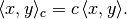
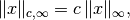
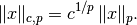
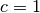

ProductSpaceConstWeighting¶
-
class
odl.space.pspace.ProductSpaceConstWeighting(constant, exponent=2.0, dist_using_inner=False)[source]¶ Bases:
odl.space.weighting.ConstWeightingConstant weighting for
ProductSpace.Attributes
constWeighting constant of this inner product. dist_using_innerTrueif the distance should be calculated using inner.exponentExponent of this weighting. implImplementation backend of this weighting. repr_partString usable in a space’s __repr__method.Methods
__eq__(other)Return self == other.dist(x1, x2)Calculate the constant-weighted distance between two elements. equiv(other)Test if other is an equivalent weighting. inner(x1, x2)Calculate the constant-weighted inner product of two elements. norm(x)Calculate the constant-weighted norm of an element. -
__init__(constant, exponent=2.0, dist_using_inner=False)[source]¶ Initialize a new instance.
Parameters: constant : positive float
Weighting constant of the inner product
exponent : positive float, optional
Exponent of the norm. For values other than 2.0, no inner product is defined.
dist_using_inner : bool, optional
Calculate
distusing the formula||x - y||^2 = ||x||^2 + ||y||^2 - 2 * Re <x, y>This avoids the creation of new arrays and is thus faster for large arrays. On the downside, it will not evaluate to exactly zero for equal (but not identical)
xandy.Can only be used if
exponentis 2.0.Notes
For exponent 2.0, a new weighted inner product with constant
 is defined as
is defined as
For other exponents, only
normand`distare defined. In the case of exponentinf, the weighted norm is
otherwise it is

Note that this definition does not fulfill the limit property in
 , i.e.,
, i.e.,unless . The reason for this choice is that the alternative with the limit property consists in ignoring the weight altogether.
The constant must be positive, otherwise it does not define an inner product or norm, respectively.
-